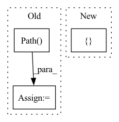

Pattern ID :40424
Before Change
if not os.path.isfile(tar_filepath):
raise RuntimeError(f"Tar file for dataset at {tar_filepath} was not found")
tar_size = pathlib.Path( tar_filepath) .stat().st_size
print("tar_filepath:", tar_filepath, "tar_size:", tar_size)
local_dataroot = utils.full_path(args.dataroot)
After Change
print("conf_data_filepath:", conf_data_filepath)
conf = Config(config_filepath=conf_data_filepath)
for dataset_key in [ "dataset", "dataset_search", "dataset_eval"In pattern: SUPERPATTERN
Frequency: 3
Non-data size: 3
Instances Fragment ID: 114628450
Project Name: microsoft/archai
Commit Name: cec9c167805699f4590f3f81c8584e8c419bb0d8
Time: 2020-05-18
Author: shitals@microsoft.com
File Name: scripts/datasets/pt_install.py
M Class Name: AnonimousClass
N Class Name: AnonimousClass
M Method Name: main(0)
N Method Name: main(0)
M Parent Class:
N Parent Class:
M File Name: scripts/datasets/pt_install.py
N File Name: scripts/datasets/pt_install.py
M Start Line: 43
M End Line: 65
N Start Line: 62
N End Line: 74
Before Change
files1 = list(path1.glob("*.%s" %suffix))
// files1 = sorted(list(path1.glob("*.%s" %suffix)), key=lambda x : int(os.path.splitext(os.path.basename(x))[0]))
path2 = pathlib.Path( path2)
files2 = list(path2.glob("*.%s" %suffix))
// files2 = sorted(list(path2.glob("*.%s" %suffix)), key=lambda x : int(os.path.splitext(os.path.basename(x))[0]))
fid_values = []
Im_ind = []After Change
fid_values = []
for fname in fnames:
m1, s1 = calculate_activation_statistics([os.path.join(path1, fname)], model, batch_size, dims, cuda)
m2, s2 = calculate_activation_statistics([ os.path.join(path2, fname) Fragment ID: 114628445
Project Name: ariel415el/gpdm
Commit Name: bde695933e46e0d59d4129babafbf2732ae81b76
Time: 2022-03-06
Author: ariel415el@gmail.com
File Name: tests/SIFID/sifid_score.py
M Class Name: AnonimousClass
N Class Name: AnonimousClass
M Method Name: calculate_sifid_given_paths(5)
N Method Name: calculate_sifid_given_paths(6)
M Parent Class:
N Parent Class:
M File Name: tests/SIFID/sifid_score.py
N File Name: tests/SIFID/sifid_score.py
M Start Line: 189
M End Line: 213
N Start Line: 199
N End Line: 208
Before Change
def read_arpa(filepath):
path = pathlib.Path( filepath)
with path.open() as fin:
find_data_section(fin)
num_ngrams = read_num_ngrams(fin)
ngrams_by_order = {}After Change
find_data_section(fin)
num_ngrams = read_num_ngrams(fin)
ngrams_by_order = {}
backoffs_by_order = {}
for order in num_ngrams:
probs, backoffs = read_ngrams_section(fin, order)
ngrams_by_order[order] = probs
backoffs_by_order[order] = backoffs Fragment ID: 114628447
Project Name: speechbrain/speechbrain
Commit Name: 4bf0b4e0a864cf1beeb97bf43633deffd3b359fc
Time: 2020-05-15
Author: aku.rouhe@aalto.fi
File Name: speechbrain/lm/arpa.py
M Class Name: AnonimousClass
N Class Name: AnonimousClass
M Method Name: read_arpa(1)
N Method Name: read_arpa(1)
M Parent Class:
N Parent Class:
M File Name: speechbrain/lm/arpa.py
N File Name: speechbrain/lm/arpa.py
M Start Line: 35
M End Line: 43
N Start Line: 34
N End Line: 45